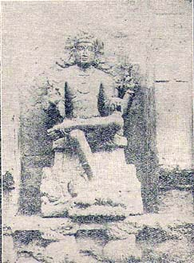

The Recovery of the Devaram Hymns
BY S. R. BALASUBRAHMANYAN, M.A L.T., Chidambaram
Tirunaraiyur is now an obscure village about twelve miles west on the road from Chidambaram to Kattu-Mannarkoil. But this village was the home of one of the greatest figures of mediaeval Saivite lore, Nambi Andar Nambi, who is said to have recovered, at the request of the Chola king, Rajaraja Abhaya Kula-Sekhara, the Saivate canons of the three famous Devaram hymnists.

Dakshinamurthi, Tirunaraiyur.
Rajaraja I (acc. 985 A.D.) was an ardent follower of the Saivite faith. He belonged to a family devoted to the Lord of Dance (Adavallan) at Chidambaram. He had the surname Sivapadasekhara and naturally his interest in Saivite canon was very great. Though there is epiqraphical evidence making provision for singing Devaram hymns even during the Pallava age, the King found that in his days the hymns of the three chief Nayanmars were not available and he conceived such a passion for them that he strained every nerve to secure them. Umapathi-Sivachariyar, who has recorded in verse this story of the recovery and redaction of the chief Saivite canons in his work Thirumurai Kanda Puranam, calls the King Raja-raja Abhaya Kulasekhara, a devotee of the Thyagesa of Tiruvarur. The King was filled with despair when his search proved futile. Then he heard of the great miracles wrought by the great saint of Tirunaraiyur, Nambi Andar Nambi.
It is said that Nambi’s father was a priest of Pollappillaiyar of Tirunaraiyur in Sonadu (now in South Arcot District). One day the father, who had to be absent at a neighbouring village, commissioned his son to deputize for him. The boy carried out his father’s instructions, had the God bathed, and then he placed the rice offerings before Him; and when he found that the Pillaiyar did not respond, the boy in vexation was about to knock his head against stone. Suddenly the God stopped him and ate all the offerings as desired. Then the boy said that it was late for the school and he feared the teacher would scold him for his late coming and so he requested the Lord to teach him his lessons. The Lord did so. The next day, the same course was repeated. Lo! The whole world wondered.
The miracle reached the ears of the Chola King when he was in straits over the Devaram hymns. And the King at once resolved to go to Tirunaraiyur. So he did; and when he came, he brought large quantities of varied offerings of fruits and cakes. At the request of the King, these huge gifts were offered to the Pillaiyar and they were duly accepted. The King was greatly delighted and thereupon made known to Nambi his quest for the Devaram hymns of the Trio (three saints–Sambandar, Appar and Sundaram), Nambi prayed to his pillaiyar and he revealed to his disciple that they would be found deposited in a room in the backside of the Hall of the Lord of Dance at Chidambaram with the seal of their palms impressed on the door. Then the king accompanied by Nambi went to the Chidambaram and told the men of Vedic Lore what held been revealed to them. The temple authorities then declared that the room would open only if those who set the seal came back. Upon this, the King conduct a festival for Nataraja, took the idols of the Tamil Trio in procession round the temple and stationed them in front of the room to the west of the Hall of Dance of the Lord. The seals were noticed and the sealed room was opened. A heap of cadjan leaves swallowed mostly by white ants was found. They poured oil over the heap and recovered the surviving leaves. The King’s distress was beyond words to find such a large-scale destruction of the holy texts. Then a divine voice from on high told him that there were in it whatever was needed for his age and this gave the king some relief. Then Nambi had them collected them and arranged. The hymns of the Trio formed the first seven, out of the twelve books of the canon of the Saivites.
It was a glorious day in the history of Chidambaram–a day only next importance to that on which the Nataraja cult was instituted and the Lord did His Dance divine to grant grace to His devotees. At one bound, the Chidambaram temple became the temple of temples of the Saivites (Koyil)–the very hub of their religious life. Nambi’s redaction of the Saivite canon made this place the pivot of the whole religious system. How proud was Sivapada Sekhara! How large this place loomed in the life of the princes and peoples of the land!